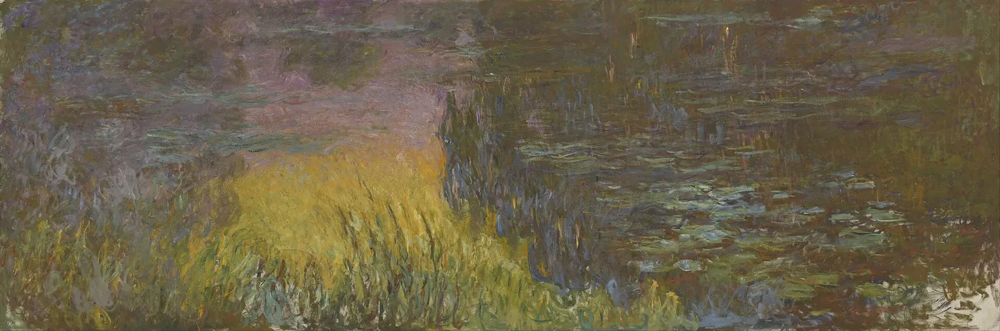
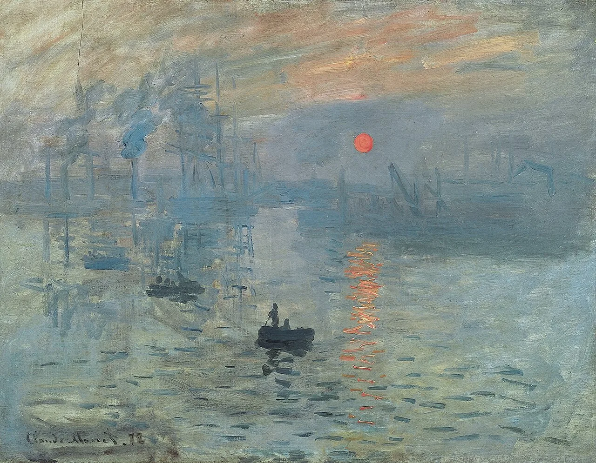
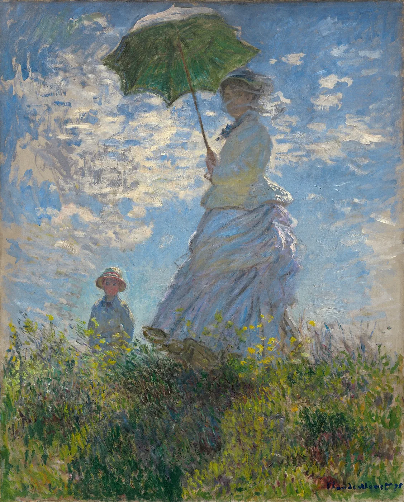
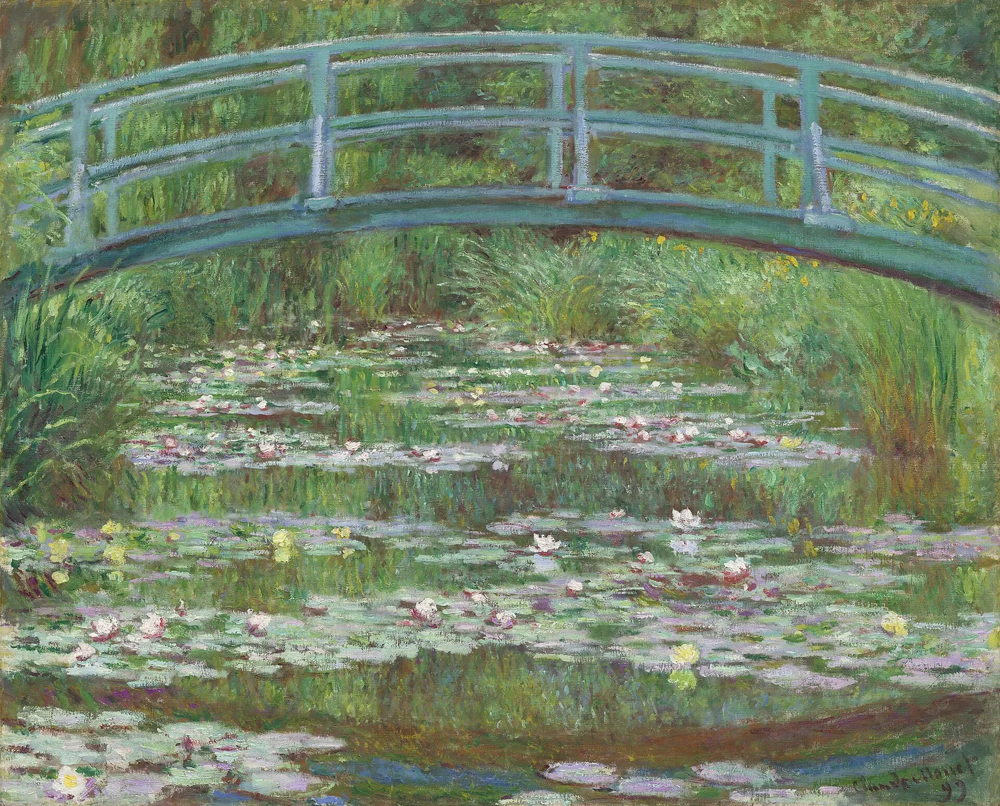
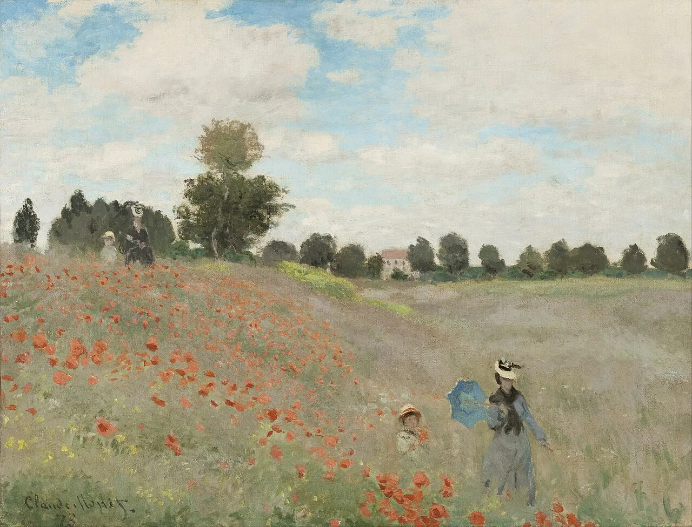
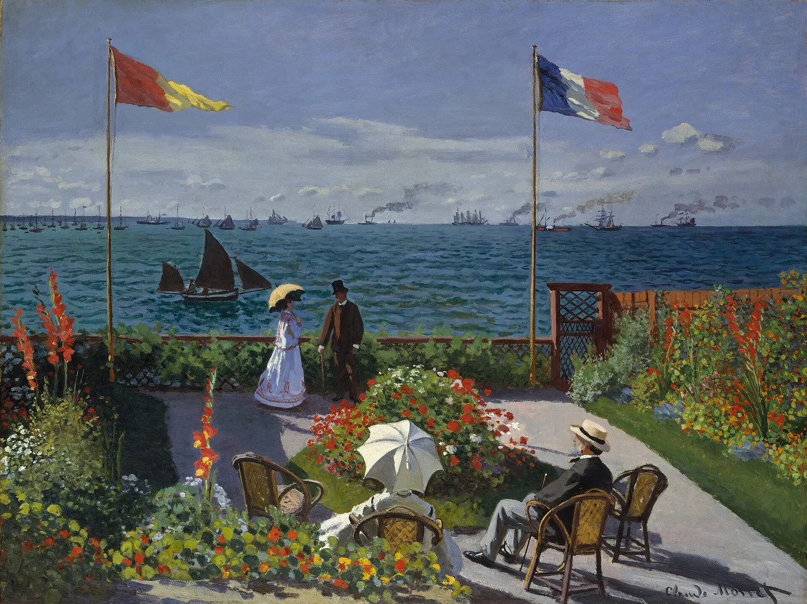
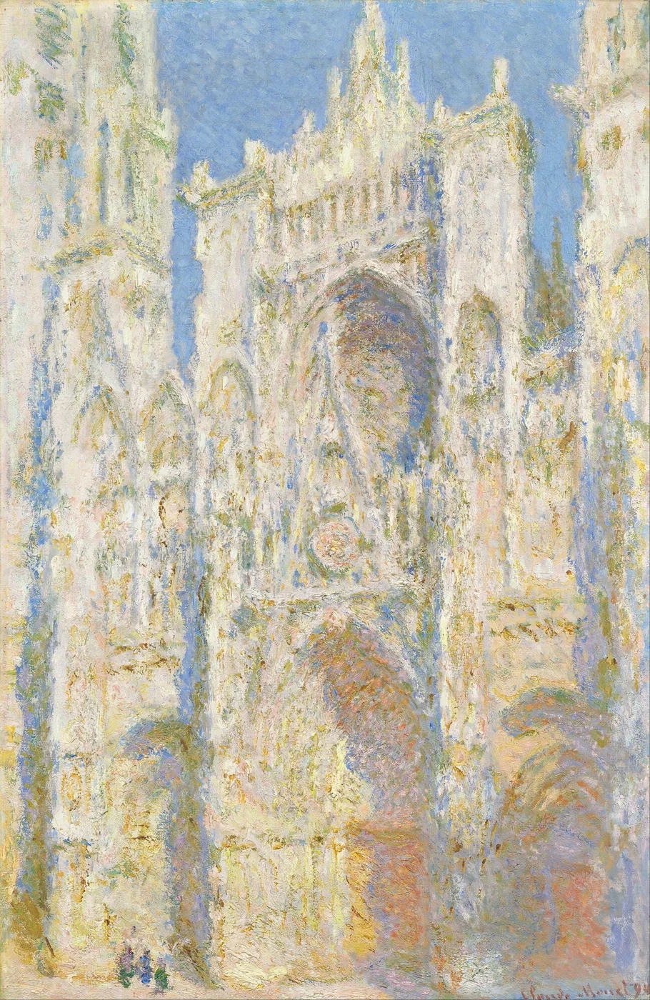
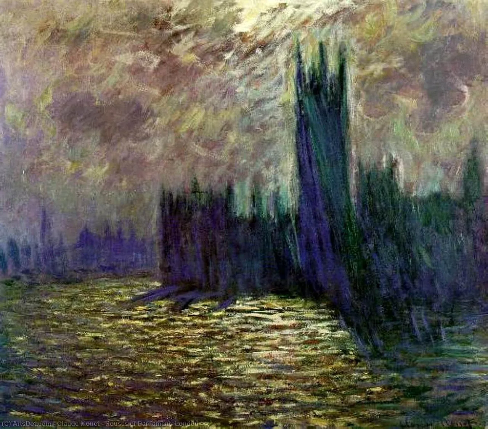
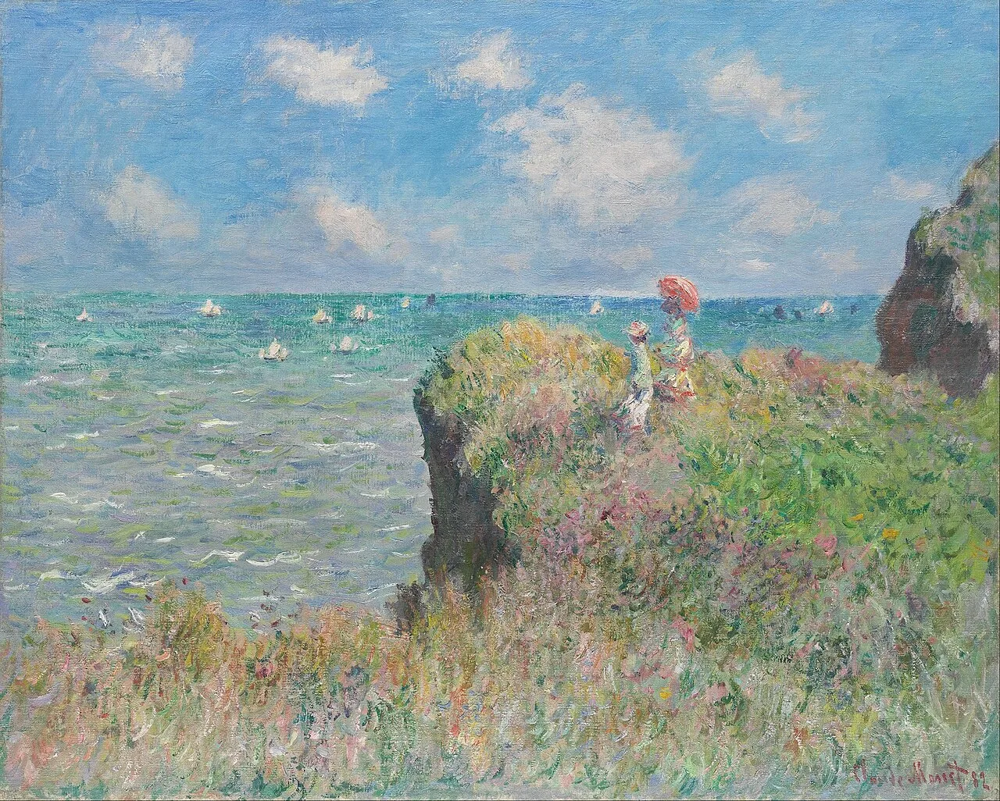
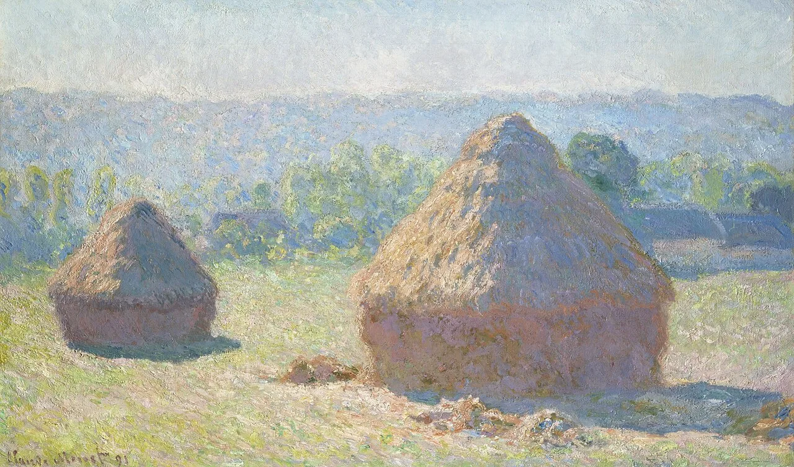

Claude Monet,
Impressioniste
d'exception
Claude Monet (1840-1926) est un peintre francais, figure centrale de l'impressionnisme. Il cherche moins a decrire les formes qu'a saisir la lumiere, l'air et les variations d'un meme motif. De la Seine aux meules, des cathedrales aux nympheas de Giverny, son oeuvre transforme le paysage en experience de couleur et de perception.
it
is
Monet
we
love









